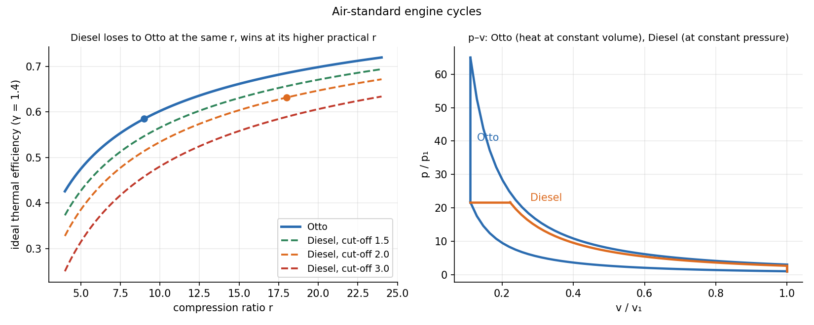

Foundations of Thermal Engineering · Engines and Combustion · 3 min read
Otto, Diesel and Dual Cycles and Engine Performance
The air-standard cycles model an internal-combustion engine as air receiving heat. In the Otto (spark-ignition) cycle heat is added at constant volume: . In the Diesel cycle it is added at constant pressure, so at the same compression ratio it is less efficient, but diesel engines run at a much higher compression ratio and win. The dual cycle splits the heat. Performance of a real engine is measured by brake power, bmep and brake specific fuel consumption.
Part of Foundations of Thermal Engineering - MOC. Previous: Psychrometrics and Air-Conditioning Processes. Next: Combustion - Stoichiometry, Heating Value and Flame Temperature.
1. The cycles
| Cycle | Heat addition | Efficiency (cold-air standard) |
|---|---|---|
| Otto | constant volume | |
| Diesel | constant pressure, cut-off ratio | |
| Dual | constant volume, then constant pressure; pressure ratio |
The factor makes the Diesel less efficient than an Otto of the same ; it tends to 1 as and the cycles coincide.
Spark-ignition engines are limited to –12 by knock (the air-fuel mixture would self-ignite on compression); diesel engines compress air only and inject the fuel at the top, so –22.

2. Worked examples
Otto, , : . With K, kPa, heat added kJ/kg ():
The mean effective pressure (the constant pressure that would give the same work over the swept volume) is the right way to compare engines of different sizes.
Diesel, , : ; an Otto at the same would give 0.685, but cannot run there. Dual with , , : , with a lower peak pressure than constant-volume heating.
3. Real engines: four-stroke operation
Intake, compression, power, exhaust: two crankshaft revolutions per cycle (; a two-stroke has ). Valve timing (intake opens before TDC, closes after BDC; exhaust opens before BDC) and the port timing of a two-stroke are drawn on a circular diagram. Real efficiencies are 25–35 % (petrol), 35–45 % (diesel), well below the air-standard values because of heat loss, finite burn time, incomplete combustion, friction and gas exchange.
Performance parameters:
( in rev/s, the displaced volume, the brake torque.)
Example. 4-stroke, 2.0 L, 4000 rpm, brake torque 180 N·m, fuel 5.0 g/s with LHV 44 MJ/kg:
| Quantity | Value |
|---|---|
| brake power | 75.4 kW |
| bmep | |
| brake thermal efficiency | |
| bsfc |
4. Emissions and alternatives
Pollutants: CO and HC (rich or incomplete burn), NOₓ (high temperature, lean), soot/particulates (diesel), CO₂. Three-way catalysts need stoichiometric operation. Alternate fuels: ethanol and biodiesel (renewable, lower energy density), natural gas, hydrogen (high flame speed, wide flammability, NOₓ and storage issues). Hybrid electric vehicles use the engine at its efficient operating points and recover braking energy.
- Using the Otto formula for a Diesel engine.
- Comparing Otto and Diesel at the same compression ratio and concluding Otto is better in practice.
- Taking for a four-stroke: it is 2.
- Mixing indicated and brake values: bmep uses brake power.
- Using LHV and HHV interchangeably in (quote which).
Predict first: increase the Otto compression ratio from 9 to 11. How much does the ideal efficiency rise?
, from 0.585: +3.2 points. Diminishing returns: knock and heat loss stop the real gain.
Why can a diesel engine run at a higher compression ratio than a petrol engine?
It compresses only air; there is no fuel to knock. Fuel is injected near top dead centre and ignites on contact with the hot compressed air.
5. Connections
- Combustion - Stoichiometry, Heating Value and Flame Temperature — the heat input and the fuel energy.
- Kinetics of Particles - Work-Energy and Impulse-Momentum and Mass Moments of Inertia — the crank mechanism and flywheel smooth the power pulses: Flywheel Sizing from the Turning-Moment Diagram.
- Balancing of Rotors - Static and Dynamic — engine balancing of reciprocating masses.
- Kinematic Inversion - Slider-Crank and Double-Slider Families — the slider-crank is the engine's kinematics.